CAD model validity
"All models are wrong, but some are useful." George Box
This text is a digest of shape defects often occurring in various CAD applications. The problems come from different sources. CAD packages are based on different geometric modeling kernels (e.g., Parasolid for SolidWorks, CGM for Catia, ACIS for SpaceClaim), so they basically "speak different geometric languages," hence there are inevitable "translation errors." The geometric flaws are often due to the approximation errors and imprecision of low-level numerical algorithms. Sometimes, it’s lossy data exchange to blame or even an improper design software used to build the geometry.
As shape healing remains largely a challenge for CAD practitioners, one must be aware of possible anomalies and their implications on subsequent engineering workflows. Being attentive to a CAD shape's validity, you will avoid many die-hard obstacles down the road. Most of the listed flaws are tough to resolve, although for simple cases it is possible to automate healing pre-processing (e.g., fixing missing seam edges).
Different levels of validity
A comprehensive analysis of CAD model validity should employ thinking at several levels of abstraction: math, data structures, and design intent.
The following rule usually works in shape healing: fixing a lower-level problem requires thinking at the upper level of abstraction. E.g., to wisely fill a gap due to a missing face (a pure geometric flaw), it might be necessary to recognize and recover its entire containing feature. One way of doing so is extending and intersecting surfaces rather than patching a hole with a NURBS surface. Thinking of features brings us to the design intent that’s not a geometric issue anymore.
Checking for the CAD model’s validity should always be based on its application domain. E.g., self-intersection defects might be critical for mesh generation algorithms. At the same time, they often have zero impact on specific shape interrogation and modeling workflows, such as the unfolding of sheet metals. Therefore, a “silver bullet” solution does not exist in shape healing. Keep in mind that “all models are wrong, but some are useful.”
The remainder of this article provides a checklist for a CAD model to verify its validity. These checks are relevant to a B-Rep representation scheme of OpenCascade kernel only, though some of them can be generalized. The set of checks listed below is not complete, as there are too many. At the same time, the most frequently occurring defects are enumerated.
Consistency of representation
Geometric validity (parameterization irregularities, curve/surface self-intersections, parametric discontinuities, etc.). The geometric validity checks are concerned with the mathematics of form. The input data here are the equations of curves and surfaces, while the verification methods usually employ some computationally expensive algorithms (intersection tests, sampling, evaluation of derivatives, etc.).
Example: an aerodynamic surface having C0 continuity (smoothness defect) in its interior.
Topological validity (orientations of boundary elements, face/solid closeness, formal shape structure, etc.). The topological validity checkers perform syntactic analysis, i.e. they check that the data structures respect some formal rules of consistency.
Example: a face with 3 contours nested into each other.
The distinguishing between pure geometric and topological invalidities makes little sense to the end-users. Such division facilitates software maintainability and reflects the separation between “geometry” and “topology” in B-Rep data structures. In practice, maintaining representation integrity is a direct function of a geometric modeling system, whatever abstraction it uses under the cover.
| Check | Tcl command | Issue description |
| Euler-Poincare property | check-euler |
Checks if the Euler-Poincare property holds for the user-specified genus. v - e + f = 2(s - h) + r Here v is the number of vertices, e is the number of edges, f is the number of faces, s is the number of shells, h is the genus of manifold, and r is the number of internal loops. 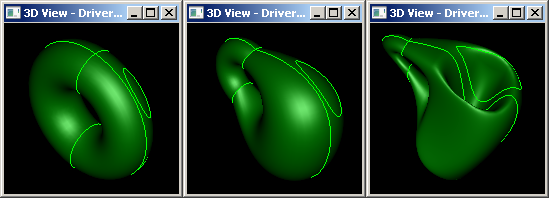
Analogy: when you download an archive from the Internet and do a checksum verification. |
| Orientation of vertex in edge | check-vertices-ori |
Checks if the vertices of the part are distinguishable by their orientation flags. A valid edge should have one FORWARD vertex and one REVERSED vertex to properly signify its topological extremities. As a result of some poorly implemented modeling operators or lossy data exchange, this rule may appear to be violated. 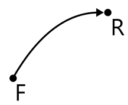
|
| Orientation of edge in wire | N/A |
The edges should be oriented so that their owning contour is traversed in a determined order (clockwise or counterclockwise). 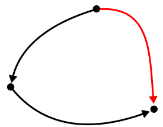
|
| Orientation of wire in face | N/A |
The wire should be oriented so that the material of its owning face is either enclosed (for the outer wires) or lies outside (for holes). 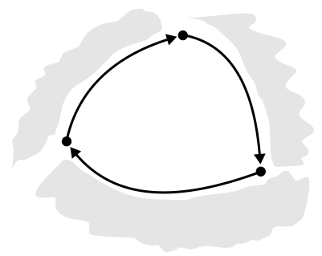
|
| Orientation of face in solid | N/A |
The faces of a solid model should be oriented so as to point outwards of the bounded volume. This requirement is relaxed for surface modeling (shells). 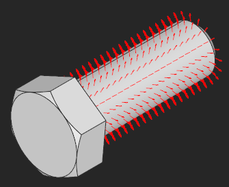
|
| Contour closeness | check-contours |
Checks if the contours of the part faces are closed (have no gaps). The optional "tolerance" argument is used to tune the precision of coincidence test. If not passed, the tolerance values baked into the B-Rep entities are used for coincidence testing. You can find more details in the corresponding chapter.   cad/anomalies/shading_wrongshape_031.brep
|
| Invalid nesting of contours | N/A |
The face's contours should be properly nested into each other. Since the inner contours determine where the material of a shape resides, their nesting is not arbitrary. 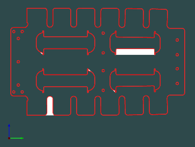
cad/anomalies/flat-pattern_inv-imbrication-of-wires.brep
|
| Solid closeness (finiteness) | check-finite |
Checks if the solid body is finite. It should be noted that in some workflows infinite volumes are perfectly valid.  cad/anomalies/shading_wrongshape_005.brep
|
| Open (naked) edges | check-open-edges |
The open edges (those owned by less than two faces) are valid for shells and prohibited for solid models. To fix this problem, face stitching (sewing) algorithm might be necessary.  cad/anomalies/shading_wrongshape_015.brep
Face stitching works for small gaps only. If applied to a model with huge gaps, this operation may end up with enormous tolerances. |
| Missing face (gap) | N/A |
The gap filling algorithm is required to fix this anomaly. |
| Intersection and overlapping of surfaces | N/A |
All surface intersections should be resolved by inserting the corresponding topological primitives (vertices, edges or patches in case of overlapping). If surfaces interact while having no topological resolution, the shape is considered locally faulty. Intersections or overlaps of the trimmed NURBS surfaces are a huge challenge for healing algorithms [Frischmann, 2011]. One way to solve this issue is to manually remove and repatch faces. 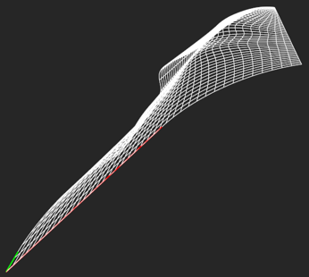
cad/anomalies/hpdc-self-intersecting-with-gap.brep
|
| Invalid space partitioning | N/A |
A correct shape with all its subshapes must bound a piece of volume in the modeling space unambiguously. However, sometimes this basic requirement is not satisfied. Let's take a solid with some inner shells as an example. A shell entity contained in a solid can represent either the outer boundary or an inner cavity of a body. A point in the cavity shell should be formally inside its parent solid (simply because any cavity is entirely enclosed by its bounding solid). Otherwise, there is an inclusion error (see the figure below).  In some rare cases, such invalid space partitioning may occur as a result of the faulty Boolean operation. Imagine that a Tool body is being subtracted from an Object body to produce a Result shape (its expected form is illustrated above on the right). Now imagine that the modeling kernel fails (for whatever reason) to classify the Tool correctly. In the figure above, the Tool solid was incorrectly classified as lying INSIDE the Object. Hence the orientation of the Tool was reversed while the boundary edges were taken as is. If you sample any point on the cavity shell, you would generally expect that this point is INSIDE the parent solid. However, in the example above, some points of the Tool body are classified as OUTSIDE w.r.t. the Result shape.  cad/anomalies/freecad/index_hmd_frunk.stp
This problem can hardly be fixed automatically as the ambiguous space partitioning leaves the design intent unclear. The users observing this sort of error should instead return to the corresponding design tools to try fixing the source of the issue (e.g., tweak the operands of the Boolean cut as in the example above). |
| Singular surface points | N/A |
Surface degeneracies usually occur due to the coincidence of NURBS control points (that’s a valid situation). Such surfaces are often used to represent triangular patches, e.g., in ship hull design. Even though the singularity points are usually allowed by a modeler, their existence may cause problems in subsequent operators (e.g., offsets), especially, if the coordinates are not perfectly equal. 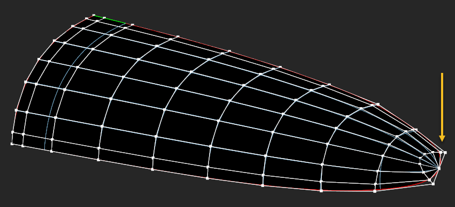
cad/anomalies/platebase-degenerated.brep
|
| Missing 3D curve | N/A |
The 3D curve is a primary edge representation. If the 3D curve does not exist, it is clearly a problem. To fix the issue, the corresponding p-curves should be evaluated against their host surfaces. The obtained points are then reapproximated. |
| Missing p-curve | N/A |
In OpenCascade kernel, the primary 3D curve should be followed by its images in all surface patches meeting at this curve. These p-curves can be recovered by projection of a 3D curve to each host surface. |
| Non-synchronous parameterization of curves | N/A |
The 3D curves and the corresponding p-curves should be parameterized synchronously, so that they yield identical points for the same parameter value (with tolerance). Inconsistency between 3D and 2D curves can cause large tolerances without any visual cracks in the model. 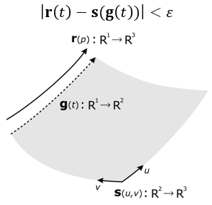
|
| Missing seam | N/A |
The seam edges correspond to a period value of a periodic surface. These edges are necessary to close the parametric domain of a face. Not all geometric kernels use the notion of seam edges (e.g. ACIS), so it is necessary to recover them sometimes after data exchange. |
| Non-manifoldness | N/A |
A boundary surface is two-manifold if it is homeomorphic to a disk in the neighborhood of every point (i.e., resembles a two-dimensional Euclidian space near each point). Non-manifold vertices, edges and faces might be perfectly valid if they are modeled like this intentionally. Otherwise, the existence of non-manifold boundary elements might be a problem for subsequent modeling operators and manufacturing (such models are clearly non-manufacturable).  cad/anomalies/non-manifold/non-manifold-01.brep
|
| Unexpected shape type | N/A |
It sometimes happens that the visually fine, closed models are defined as shells instead of being formal solids. Other examples include single faces defined as shells or compound parts wrapping a single result of a solid Boolean operation. These anomalies can be traced down using a topology graph representation of B-Rep model. The graph will contain excessive nodes and/or nodes of improper type. |
| Tolerance inclusion | N/A |
A geometric tolerance of a vertex should not be less than a geometric tolerance of an edge. A geometric tolerance of an edge should not be less than a geometric tolerance of a face. |
B-Rep health or dirtiness of representation
"All languages may be used to convey the wrong message, or to incorrectly convey the right message." [González-Lluch et al, 2017]
A formally sound CAD model can happen to contain redundant information, such as overcomplicated geometry definition or excessive boundary elements. While such models do not violate any validity rules, they challenge the modeling algorithms and require extra computational resources.
Example: a spline surface where canonical geometry is a better fit, like a cone or cylinder.
The following two sources of "shape dirtiness" tend to be common:
- Excessive shape description.
- High geometric tolerances.
The excessive shape description might lead to an aggressive increase in memory consumption or badly influence geometry processing algorithms. Moreover, excessive shape representation might cause numeric instability within the downstream engineering workflows [Frischmann, 2011]. At the same time, such flaws do not break the formal validity of a CAD model.
| Problem | Tcl command | Issue description |
| Non-canonic geometry | N/A |
Example: a geometrically planar surface represented with a NURBS surface or a surface of revolution (like demonstrated by the example below).   cad/anomalies/occ26372_RP.brep
|
| Small edges | heal-small-edges |
Sometimes a CAD model contains excessive number of small (usually straight) edges which are hard to treat numerically (e.g., when generating FEA meshes). Such edges can be enlarged by reapproximating.   cad/anomalies/occ22778_square.brep
|
| Small faces | N/A |
It is possible to merge small faces by reapproximating them. cad/industrial/repatch-hpdc-colored.stp
|
| Non-maximized boundary elements | N/A |
Face/edge maximization is usually performed as a post-processing stage of a Boolean operation. cad/gehause_rohteil.stp
|
| High geometric tolerances | check-toler |
Maintaining high-fidelity B-Rep is a challenge. Geometric modeling kernels, such as OpenCascade or Parasolid, implement the "tolerant modeling" approach. I.e., instead of using a global geometric inaccuracy, each boundary element (vertex, edge and face) has its own associated imprecision value called [geometric] tolerance. A visually fine B-Rep model may contain significant geometric flaws like small gaps between faces or wild parameterization of curves. Since what you see on a display is not the real shape but only its faceted approximation, such imperfections remain hidden unless your modeling engine suddenly stops working on downstream operations. See also the corresponding chapter for details. |
| C0 geometry | split-by-continuity |
The support of C0 geometric primitives is limited in all geometric kernels. It is usually a good idea to split such entities with the relevant boundary elements (vertices or edges) to enhance the smoothness of the geometry. Alternatively, for NURBS curves and surfaces, it is possible to remove knots if the shape is geometrically continuous though parameterized improperly. The knot insertion algorithm can also be applied for non-G-smooth geometric elements if a certain deformation (within the prescribed tolerance) is allowed.  cad/anomalies/from_sat/converted_brep_from_sat_37.brep
|
| Nested local transformations | check-internal-locations |
In OpenCascade kernel, each topological element might be assigned with a local transformation to place it relative to its parent element. While this capacity of the modeler is convenient for representing assemblies as compounds, we discourage using the transformed boundary elements in a single solid representation. Formally speaking, a local transformation is a property of an arc in the topology graph. It is OK to have a local transformation for in-compound inclusions and not OK to have them deeper in the graph. 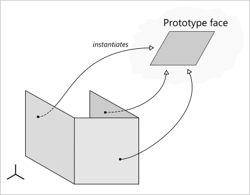
|
| Ill-defined surface extension | N/A |
For some operations like removing face, push/pull, etc. surface extensions are used. It may easily happen that if parameter lines of a surface are converging, the surface extension starts to self-intersect. In such situations, any modeling operators which require surface extensions will likely fail. Another problem is a highly oscillating surface when sampled out of its trimming contour. |
Fitness to functional requirements
The function of the part and its manufacturing constraints are encoded in what’s called a “design intent.” The improperly designed models can have no geometric flaws yet remain incorrect from the engineering standpoint.
Example: a sheet metal part of uneven thickness.
It is not a geometric kernel to blame in such situations. At the same time, a geometric kernel might still be helpful in discovering the violated functional and technological requirements.
| Problem | Tcl command | Issue description |
| Too many details | N/A |
The overcomplicated CAD parts may require simplification prior to the engineering analysis, manufacturing planning, data interoperability, visualization, etc. To simplify model, the defeaturing techniques should be employed. |
| Insufficient thickness | N/A |
Sufficient thickness is a severe requirement, e.g., in high-pressure die casting. |
| Invalid sheet metal | N/A |
Non-existing bends or uneven sheet thickness is somewhat unexpected in sheet metal working. Other examples that complicate manufacturing include too short flanges, impossible features, etc. |
| Non-beautified model | N/A |
A beautified geometric model is a modification of the input model that incorporates appropriate symmetries and constraints like parallelism, orthogonality, etc. [González-Lluch et al, 2017]. Beautification-pending models can emerge as a result of reverse engineering of a B-Rep model from a discrete dataset (point clouds, mesh). 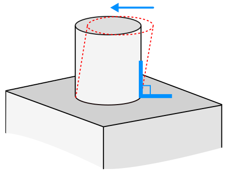
|
| Inconsistent tolerances | N/A |
The following picture illustrates a problem of inconsistent tolerance definition (taken from Flightstory.net aviation blog): 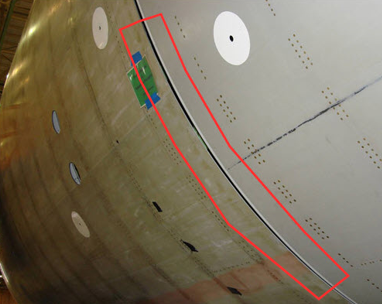
This is a typical stack-up problem: the parts do not assemble properly in their maximum tolerance condition. The problems like this gave raise to Computer-Aided Tolerancing field, which is concerned with providing a consistent set of technological/assembly tolerances. It is necessary to ensure that the part can function in maximum, minimum, and varied conditions. |
| Collisions | N/A |
Geometric collisions between different components of an assembly. |
| Lost instancing | N/A |
Duplication of assembly parts and components instead of sharing them with appropriate transformation matrices. |